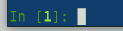
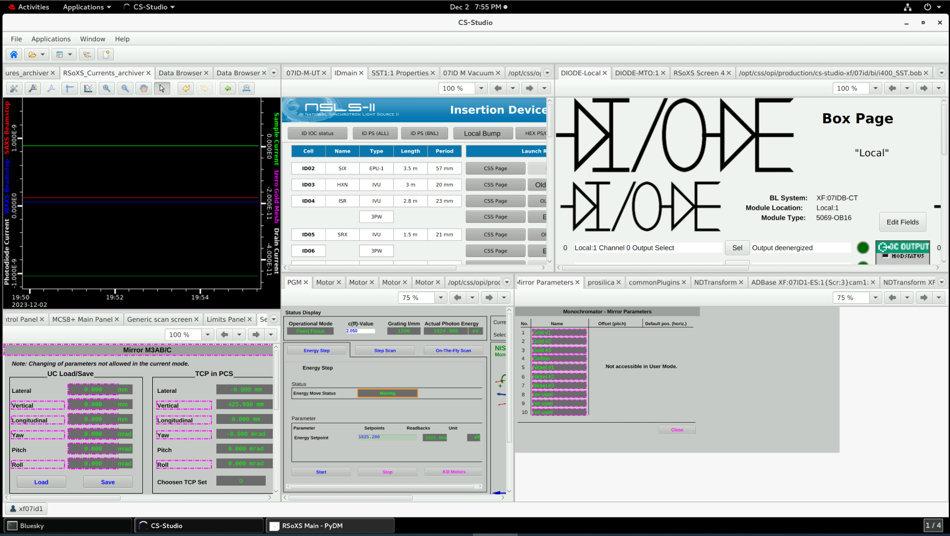
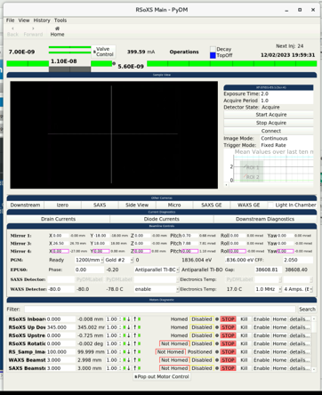

Setup beamline computers and software
Complete these steps after your beam time has been scheduled and before your scheduled beam time days.
RSoXS Control computer (xf07id-ws24)
This computer is used to control beamline hardware, set up and align samples, and run scans. Navigate across screens using ctrl + alt + up/down arrow
Open terminal app by going to Applications and clicking on the terminal icon. Can open multiple tabs using File –> New Tab. Can right click on tabs to rename them as Phoebus, PyDM, Bluesky, etc.
Start QueueServer and nbs-gui
First-time setup (TODO: needs refining and correcting):
- First,
git pullthe contents oflivetable,nbs-bl,nbs-core,nbs-gui, andnbs-viewerlocated in/home/xf07id1/xrayguito ensure the most up-to-date versions are used. - Then
pip install --no-build-isolation -eall of these packages for first time setup. This can be done in the terminal or in VSCode. - Then run nbs-viewer (this may no longer be necessary?).
Activate the appropriate environment if necessary (e.g., conda activate 2024-2.3-py311-tiled).
In a new terminal tab, run
qsstartto start QueueServer and leave this open. The following output is an example that indicates that QueueServer has fully started.[I 2025-08-29 17:34:24,894 bluesky_queueserver.manager.manager] Starting ZMQ server at 'tcp://*:60615' [I 2025-08-29 17:34:24,894 bluesky_queueserver.manager.manager] ZMQ control channels: encryption disabled [I 2025-08-29 17:34:24,902 bluesky_queueserver.manager.manager] Starting RE Manager process [I 2025-08-29 17:34:24,926 bluesky_queueserver.manager.manager] Loading the lists of allowed plans and devices ... [I 2025-08-29 17:34:25,703 bluesky_queueserver.manager.manager] Starting ZeroMQ server ... [I 2025-08-29 17:34:25,703 bluesky_queueserver.manager.manager] ZeroMQ server is waiting on tcp://*:60615In a new terminal tab, run
guistartto open the beamline operation GUI. Alternatively, it can be opened by runningnbs-gui --profile collection.After the GUI opens, connect to QueueServer by going to the Queue Control tab on the upper left-hand side, and clicking Connect. This requires
qsstartto be run already.Start the beamline operation software by clicking Open. If any updates are made to the code, hit Close then Open in the Queue Server box on the GUI to update new code. To check that functions have updated, the IPython Kernel can be used to type the function name followed by ?? to check that updates are visible.
In a new terminal tab, run
viewerstartto open the live data viewer.
Note that the GUI has some additional coding constraints than does running Bluesky in the terminal, so certain errors may appear while attempting to open the GUI even if Bluesky were to open in the terminal with no errors.
(fallback) Start Bluesky in a terminal
QueueServer and nbs-gui should be the default applications used for beamline operation. However, if there are any issues, the beamline operation software also can be run in a terminal.
Before starting, the beamline scientist should sync/pull the latest version of the beamline codebase onto the workstation used for beamline operation.
In a new terminal tab, run:
bsuiAfter Bluesky is loaded and is ready to accept a command, the beamline status will be printed out (the current metadata loaded up) and the command input line will appear green with the path to the current data folder. (add instructions for reverting to previous versions if there is trouble)

In case needed, can exit Bluesky by running:
exitRestarting Bluesky may be needed for the following reasons:
- Code was updated
- Troubleshooting while running scans
There are instances when exiting a plan or bluesky at an unlucky time will change the behavior of the entire terminal, (text not being displayed when typing, or similar). In these cases, you must close the entire terminal (or tab) and create a new one.
(no longer supported) Bluesky has has full control over beamline motors as well as data manipulation. Can also run a local version of Bluesky by instead running:
bsui_localIn this version, beamline hardware cannot be controlled, but the sample imager, as well as data and spreadsheets can be manipulated. This version is appropriate to run if the RSoXS station does not have scheduled beam time or control over the beam. At any point, the current default Bluesky environment and python path can be checked in a terminal (outside Bluesky):
echo $BS_ENV
echo $BS_PYTHONPATHIf it is needed to run Bluesky using a different environment (e.g., a different version of Bluesky is needed) than what is set as the default, the environment path needs to be typed out explicitly for standard and local Bluesky as shown below. As of September 26, 2024, a newer version of Bluesky can be started by exiting the current Bluesky and then running the following. This became the default environment as of January 30, 2025.
BS_ENV=/nsls2/conda/envs/2024-2.3-py311-tiled BS_PYTHONPATH=/nsls2/data3/sst/rsoxs/shared/config/bluesky_overlays/2024-2.3-py311-tiled/lib/python3.11/site-packages/ bsuiIt is possible to revert back to the default environment by running exit, then bsui. However, there may be a few errors (e.g., FileNotFoundError: [Errno 2] No such file or directory: '/home/xf07id1/.config/bluesky/md/oldversions%233'). These can be resolved by exiting Bluesky (exit), changing directory (cd) to the path shown in the error, viewing the files in this directory (ls), renaming files that are causing errors (mv [old_file_name] [new_file_name]), and then starting Bluesky (bsui). The following is an example. When switching environments, check the “Versions of DSSI software” output to ensure the version numbers change to those that are desired.
exit
cd /home/xf07id1/.config/bluesky/md
ls
mv oldversions#3 oldversions
mv versions#2 versions
bsuiStart phoebus
In a new terminal tab, run:
run-phoebusThe phoebus GUI should open. If it looks different, reloading one of the saved layouts should reset it.

The currents archiver may need to be reloaded from /xf07id1/css-workspace-xf07id/CSS/RSoXS_Currents_archiver.plt.
Although mostly obsolete, the predecessor, CS-Studio can be opened by running run-css.
Start PyDM
In a new terminal tab, run:
conda activate pydm-local“local” refers to the PyDM setup that is local to the environment in which it was created. Open the GUI by running:
pydm /nsls2/data/sst/legacy/RSoXS/.pydm/.pydm/RSoXS_UIS/RSoXSmain6.ui
Click on Valve Control to open a larger window showing the gate valves and shutters and can be used to open/close them.
Beamline staff or users can also login into terminal app
In a new terminal tab run, for example:
su pketkarEnter password and 2-factor authentication when prompted. This will change the appearance of the terminal according to the users NSLS-II home directory settings, and if beamline staff, will allow SSHing into IOCs etc. For reference, su means “switch user”.
Managing user access to Guacamole, etc.
Log into a new tab.
View current users by running: n2sn_list_users
Add a user by running n2sn_add_user -l [username] USER or n2sn_add_user -n [life number] USER. Replace [username] and [life number] with the actual username or life number of the user. Ensure that the user has completed the necessary trainings.
Give access to Guacamole by running: n2sn_add_user -l [username] GUACCTRL. Alternatively, can grant user only view access by running: n2sn_add_user -l [username] GUACVIEW.
Remove a user by running: n2sn_remove_user -l [username] USER
Shutting down or restarting the computer (if needed)
Log into a new tab. To shutdown, run:
dzdo shutdown nowThe command shutdown --n also works. To restart, run:
dzdo rebootRSoXS Analysis computer
This computer is used to prepare spreadsheets and analyze incoming data.
Login
Username: RSoXS User
Password: RSoXSUser
(this will likely have to change in the near future)
File directory (one-time setup)
Mount the NSLS II drive.
- Go to File Explorer
- Navigate to This PC
- On the upper menu, select the three dots (See more), and click on Map network drive
- Folder: \storage.sst.nsls2.bnl.gov
- Check Reconnect at sign-in
- Click Finish
- Enter your BNL username as, e.g, bnl, and your password. The bnl is necessary to connect to the correct domain.
Set up temporary folder for spreadsheets and other workflow items.
- In the NSLS II drive, navigate to
- Create a folder called spreadsheets_temporary
This folder will be used to gather spreadsheets, notebooks, and other items used for real-time beamline workflow. This directory can be accessed via the RSoXS Control computer and also through JupyterHub via the path /nsls2/data/sst/shared/scratch/spreadsheets_temporary
Currently, there is not a simple way for the RSoXS Control computer to access these documents directly from the proposal directory because the RSoXS Control computer is not associated with any user’s account (and login credentials). Thus, this spreadsheets_temporary folder is used during the beam time, and its contents are then transferred to the proposal directory at the end of each beam time.
Set up internet browser
Feel free to import these bookmarked resources into a chrome window for easy access during a beam time: https://github.com/NSLS-II-SST/rsoxs_workflow/blob/20250415_Draft/examples/bookmarks_6_3_25.html
Open nbs-viewer
See installation instructions: https://github.com/xraygui/nbs-viewer
(no longer used) Open RSoXS Tiled in Igor
See the Installation instructions in the README.md document.